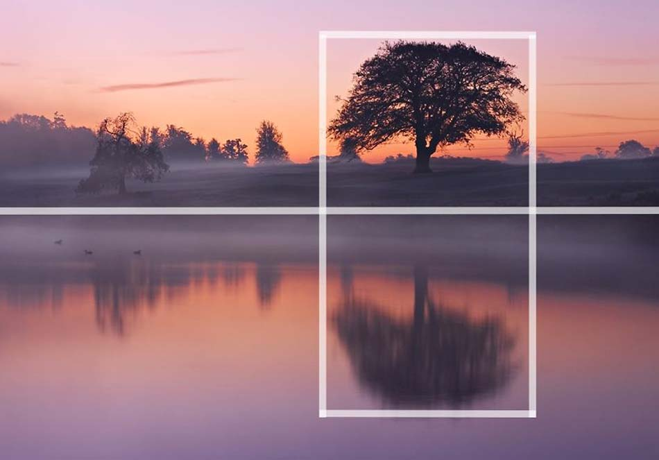

La Composicion Fotografica
La Composicion Fotografica

Bienvenidos a la unidad de Composicion Fotografica, en esta seccion encontraras todo lo necesario para comenzar, que lo disfrutes!
Conocimiento previo
Para realizar esta parte del curso necesita conocimientos basicos de la fotografia , en caso de no poseerlos remitase a la Unidad II Introduccion a la Fotografia.
Objetivos
- Aprender el concepto de la Composicion Fotografica y aplicarlo en fotografias.
- Estudiar los elementos y herramientas de la Composicion Fotografica.
- Aprender a distinguir la composicion de una fotografia.
- Conocer las trece reglas basicas de la composicion y saber aplicarlas.
- Aprender los conceptos de exposicion y profundidad de campo.
Licencia: dominio público